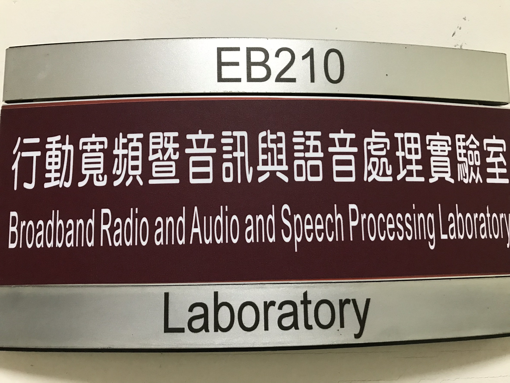

 本實驗室以語音/自然語言處理以及下世代寬頻無線通訊系統，作為長期的研究與發展目標。眾所皆知的，人工智慧 (AI) 正加速改變全球產業、經濟與社會生活發展型態，亦成為各大產業的發展重點。本實驗室研究團隊致力於開發AI技術應用於語音助理與寬頻無線通訊系統。在眾多的AI應用中，顯而易見地，AI為智慧家庭的應用開啓了創新的大門，其中，尤以語音/自然語言技術的應用最受囑目，因為語音對話是人機互動最直覺、最人性化的方式。因此，我們基於智慧家庭的應用主軸，開發AI語音助理系統以及相關之寬頻無線傳輸的演算法。
BRASLab focuses on both speech/natural language processing and next-generation broadband wireless communication systems as long-term research and development goals. It is well known that artificial intelligence (AI) is accelerating the development of the global industry, economy and social life. Furthermore, it also has become the focus of major industries. In response this trend, BRASLab is dedicated to the development of AI technology for voice assistant and broadband